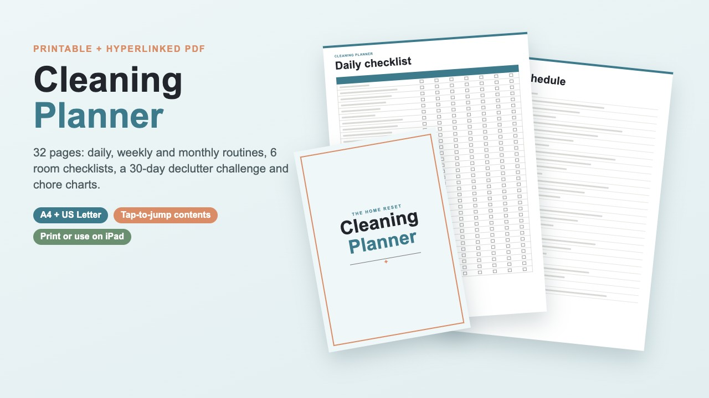
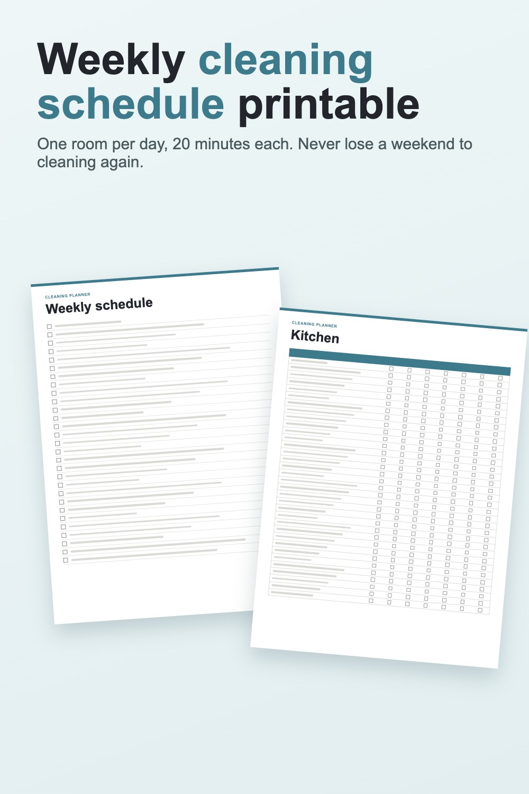

A calm, clean home in 15 minutes a day. 32 pages with daily, weekly and monthly routines, a checklist for every room, a 30-day declutter challenge and chore charts for the whole family.
Get the cleaning planner, $8

Dishes, counters, a quick bathroom wipe, one load of laundry and a 10-minute tidy before bed. That small list keeps the home under control on busy days.
Kitchen on Monday, bathrooms on Tuesday, dusting on Wednesday, floors on Thursday, bedrooms on Friday. Each room takes 20 to 30 minutes, and the weekend stays free.
The oven, the fridge shelves, the baseboards and the blinds don't need a full weekend. Tick off one or two monthly tasks each week instead.
Less stuff means faster cleaning. The 30-day challenge takes one small spot a day, like the junk drawer or the fridge door, so it never feels like a big project.
Put every chore on the family chart with a name next to it. Kids get their own chart with a reward line at the bottom.
Want to try it first? Download the free cleaning checklist. All products: printables and templates.